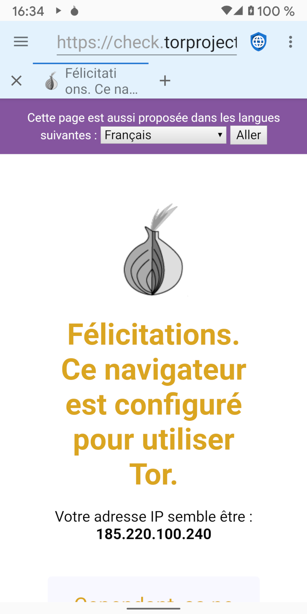

Il existe deux catégories générales de mauvais acteurs qui veulent porter atteinte à la vie privée du Web: des gouvernements malveillants ayant accès à des fournisseurs de services Internet (FAI) et des méga entreprises exploitant des réseaux sociaux et publicitaires. Des proxys comme TOR (The Onion Router) et I2P (The Invisible Internet Project) sont utiles pour protéger la confidentialité des gouvernements malveillants (qui espionnent le trafic en transit) mais pas de méga sociétés (qui intègrent du code malveillant sur les serveurs Web).
Les gouvernements malveillants espionnent souvent leurs citoyens pour punir la dissidence ou les activités liées aux droits de l'homme. Ils exploitent généralement les FAI locaux ou peuvent les obliger à divulguer des informations indiquant chaque adresse IP visitée par chaque utilisateur. Les proxys en couches sont conçus pour vaincre cette atteinte à la vie privée en chiffrant le trafic à partir de l'appareil d'un utilisateur et en le routant via plusieurs serveurs sur Internet avant de l'envoyer à la destination finale. Cela signifie qu’aucun FAI, serveur ou site Web individuel ne peut connaître à la fois l’adresse IP de l’appareil de l’utilisateur et l’adresse IP du serveur Web final. Les gouvernements malveillants et les FAI qu'ils contrôlent ne peuvent pas savoir à quels serveurs Web un utilisateur accède, bien qu'ils puissent dire que l'utilisateur utilise un service proxy en couches. Dans certaines parties du monde, l'utilisation de proxies pourrait être interprétée comme une preuve de comportement illégal («Si vous n'aviez rien à cacher, vous ne crypteriez pas votre trafic») et les utilisateurs pourraient être punis parce que les gouvernements supposent qu'ils font quelque chose qui est interdit. Ainsi, les proxies peuvent être utiles, mais elles ne sont pas une panacée.
Lorsqu'un utilisateur se connecte à un serveur Web, celui-ci peut voir l'adresse IP de l'utilisateur. Bien que ce ne soit pas une science parfaite, les adresses IP peuvent être transformées en adresses physiques avec une juste précision. Les petits serveurs Web s'appuient généralement sur des adresses IP pour identifier l'emplacement des utilisateurs visitant leur site. Les proxys sont une bonne solution pour masquer l'emplacement de l'utilisateur à partir de ces serveurs. Mais les grandes méga-entreprises propriétaires de réseaux de médias sociaux et de publicité utilisent tout un profil d'informations conçu pour suivre les utilisateurs sur des appareils et des adresses IP. Ces profils utilisent diverses techniques pour identifier les utilisateurs, notamment JavaScript, les cookies, les identifiants de suivi et les empreintes digitales du navigateur. Parce que la grande majorité des sites Web sur Internet téléchargent une annonce publicitaire sur l'un des principaux réseaux ou intègrent des icônes de réseaux sociaux avec leur code JavaScript associé, ces sociétés ont créé des profils pour presque tous les utilisateurs en ligne et peuvent suivre leur activité Internet sur des sites indépendants.
Ils suivent chaque site visité, tout ce qui est acheté, chaque carte de crédit utilisée pour effectuer un achat, chaque adresse à laquelle les articles sont expédiés, et les métadonnées GPS de chaque image téléchargée sur Internet. Ils établissent un profil de l'âge, du sexe, de l'état matrimonial, de l'adresse, des affiliations politiques, des appartenances religieuses, de la situation de famille, du nombre d'animaux de compagnie, et tout ce qu'ils peuvent mettre la main dessus. Ils achètent même des bases de données de transactions par carte de crédit dans les magasins locaux, afin de pouvoir suivre les habitudes d'achat hors ligne des utilisateurs dans leurs profils. Parce qu'ils disposent déjà d'informations d'adresses beaucoup plus précises sur un utilisateur qu'une adresse IP ne peut le révéler, les proxies n'offrent aucune véritable protection de la vie privée contre les grosses corporations.
La meilleure protection contre la confidentialité des grandes entreprises consiste à naviguer sur le Web avec JavaScript désactivé, le suivi du blocage des réseaux publicitaires, la désactivation des cookies et du stockage du DOM et en utilisant un navigateur difficile à identifier.
Malgré leurs limites, les proxies peuvent être utiles dans certaines circonstances. Tor et I2P ont des applications Android qui facilitent l'utilisation de leurs réseaux proxy. Lorsque le proxy est activé dans Clear Browser, la barre d'application aura un fond bleu clair au lieu du gris clair par défaut. Étant donné que le trafic est acheminé via plusieurs nœuds proxy, l'utilisation d'un proxy en couches est souvent beaucoup plus lente que la connexion directe à Internet.
